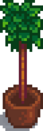

Topiary Tree
Jump to navigation
Jump to search
| Topiary Tree | |
 | |
| Can be placed as decoration. | |
| Information | |
| Source | Price |
| Carpenter's Shop | |
| Traveling Cart | |
| Sell Price | Cannot be sold |
The Topiary Tree is a decorative piece of furniture. It can rotate into daily stock at the Carpenter's Shop for  500g or the Traveling Cart for between
500g or the Traveling Cart for between  250–2,500g.
250–2,500g.
It's also available from the Furniture Catalogue for  0g.
0g.